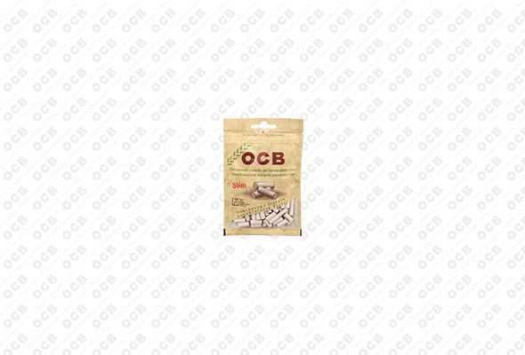

Republic Technologies International est un acteur majeur de la fabrication de papiers à rouler et d’accessoires pour fumeurs, avec OCB comme marque phare. L’entreprise évolue dans un environnement où la communication est strictement encadrée par des régulations limitant la publicité et la promotion. Le défi était donc de concevoir des visuels engageants tout en restant conforme aux restrictions légales.
Republic Technologies International
Créer dans un secteur ultra-réglementé
Republic Technologies International est un leader mondial dans la fabrication de papiers à rouler et d’accessoires pour fumeurs, notamment la marque emblématique OCB. Lors de mon stage dans l’entreprise, le principal défi était de concevoir du contenu visuel créatif et percutant tout en respectant strictement les réglementations en matière de communication sur les produits du tabac. Cela a nécessité une approche stratégique et innovante du design pour assurer la visibilité et l’engagement de la marque sans enfreindre les contraintes légales.
Mon rôle
- Graphiste
- Communication
Équipe
- Équipe marketing
- Graphistes
Période & Lieu
- Avr - Juin 2019
- Perpignan (France)
Outils
- Adobe Illustrator,
- Photoshop, InDesign,
- Premiere
01 - Une marque mondiale dans un secteur réglementé

02 - Mon rôle
En tant que stagiaire en graphisme au sein de l'équipe marketing, j'ai travaillé aux côtés de deux graphistes permanents afin de développer des supports visuels pour différents secteurs de l'entreprise, notamment les produits liés au tabac, les produits optiques et les e-liquides pour e-cigarettes. J'étais notamment chargé de créer des supports marketing conformes à l'identité de marque de Republic Technologies International, en veillant à la cohérence de l'ensemble des canaux de communication. L'un de mes principaux projets consistait à concevoir l'emballage de filtres à charbon avec des bouchons en céramique pour le marché allemand, une tâche qui exigeait à la fois de la précision et le respect de réglementations strictes en matière d'emballage. Tout au long de mon stage, j'ai exploré des moyens innovants d'engager les consommateurs tout en respectant les contraintes légales.
03 - Le défi majeur : créer dans un cadre légal strict

L'un des défis les plus importants du travail dans l'industrie du tabac est de naviguer parmi les réglementations complexes en matière de publicité. Les stratégies promotionnelles traditionnelles, telles que la publicité directe et la promotion publicitaire des produits, sont soit sévèrement restreintes, soit totalement interdites. L'entreprise a donc dû trouver d'autres moyens de maintenir sa visibilité et l'attrait de sa marque. Le défi pour moi consistait à créer des designs attrayants qui trouvent un écho auprès du public cible tout en respectant scrupuleusement le cadre juridique. Cela a nécessité une compréhension approfondie des règles de conformité et une approche stratégique de la narration visuelle qui mettait l'accent sur l'image de marque et l'aspect lifestyle plutôt que sur la promotion directe des produits.
04 - Approche et solutions
Pour contourner les restrictions publicitaires, j’ai misé sur une stratégie de conception centrée sur la qualité du produit, le savoir-faire « Made in France » et des inspirations lifestyle. Des visuels soignés et des emballages attractifs ont renforcé l’identité haut de gamme, tandis que des publications saisonnières sur les réseaux sociaux ont intégré le produit de façon subtile dans les moments du quotidien : feuilles d’automne, plages estivales, ambiances hivernales chaleureuses... En magasin comme en ligne, les présentoirs et contenus numériques ont permis de maintenir une image cohérente et premium, assurant une forte reconnaissance de la marque malgré un cadre réglementaire strict.
05 - Enseignements et Retours d'Expérience
Mon passage chez Republic Technologies International m’a confronté aux réalités du design dans un secteur extrêmement réglementé, où la publicité directe est souvent interdite. J’y ai appris à concevoir des supports visuels capables de susciter l’intérêt tout en respectant des contraintes légales strictes. Cela m’a amené à développer des solutions créatives pour maintenir une identité de marque forte, en valorisant notamment le produit à travers le storytelling visuel, le packaging, ou des mises en scène subtiles sur les réseaux sociaux. J’ai également appris à naviguer dans des systèmes de directives complexes, en adaptant mes créations à différents marchés internationaux, chacun ayant ses propres exigences. Cette expérience a renforcé ma conviction que le design n’est pas seulement une question d’esthétique, mais un levier stratégique puissant, notamment lorsque les moyens de communication sont limités.